- Módulo: Fundamentos de Hardware
- Título del trabajo Control remoto
- Componentes del grupo: Iván José Hernández Regalado
- Curso Académico: 2013/2014
- Fecha de entrega: 20 de Mayo de 2014
Primero que nada establecemos IP's estáticas a nuestras MV's.
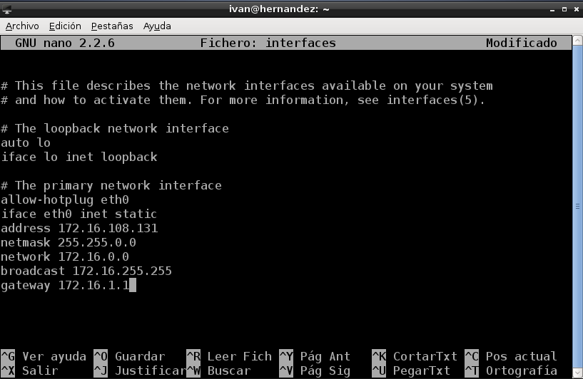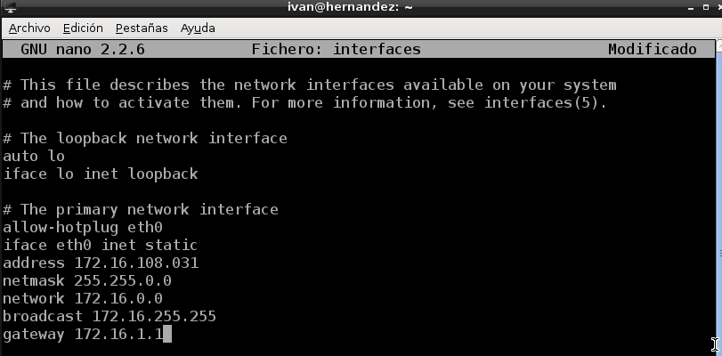Empezamos instalando el italc-master en una MV que será la que llevará el control de las demás.
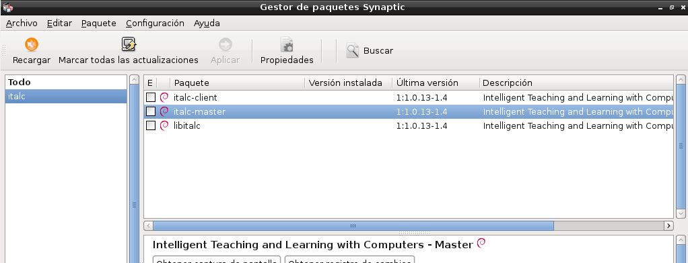Primero nos descargamos el italc cliente de alguna página web segura y procedemos con la instalación.
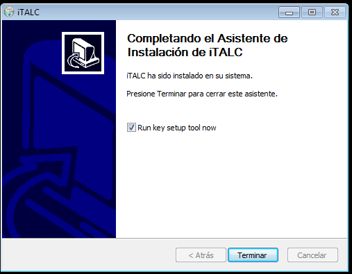Para llevar la instalación con éxito debemos copiar la "key" del public del master para que el instalador de Windows nos la coja. Para ello cambiamos el nombre de la "key" por "italc_dsa_key.pub"
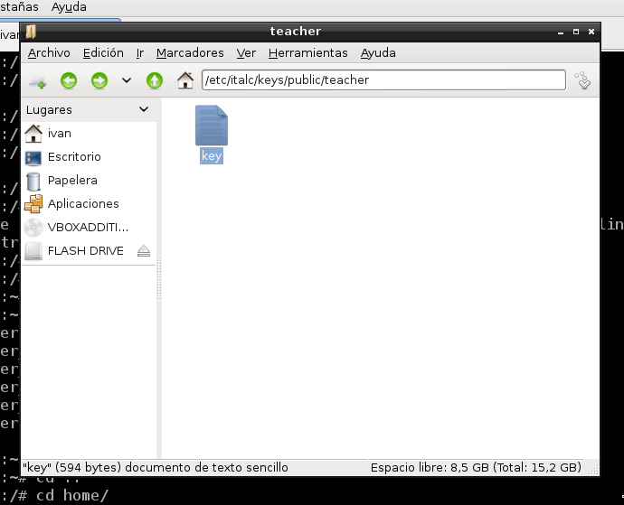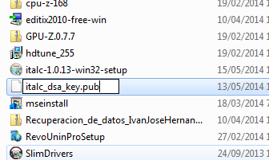Finalmente, comprobamos que está iniciado el servicio.
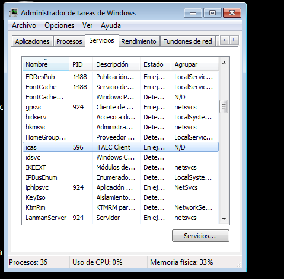Desactivamos el firewall por si hubieran problemas de conexión entre las MV. Y le proporcionamos al programa italc cliente permisos.
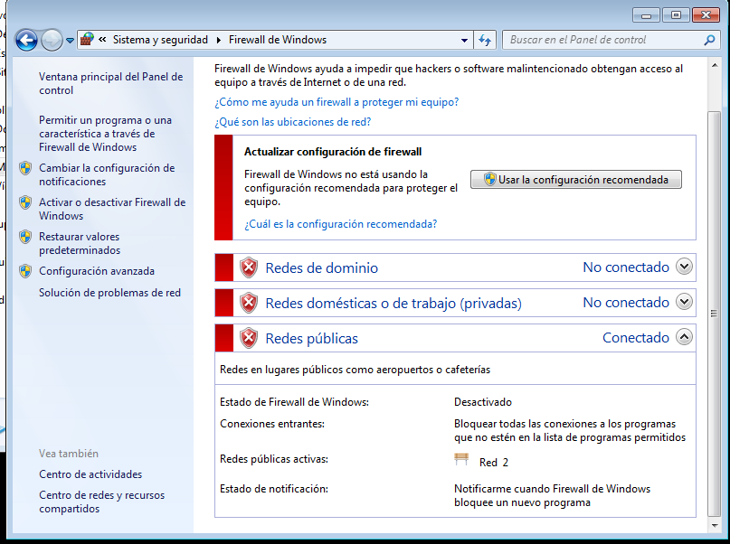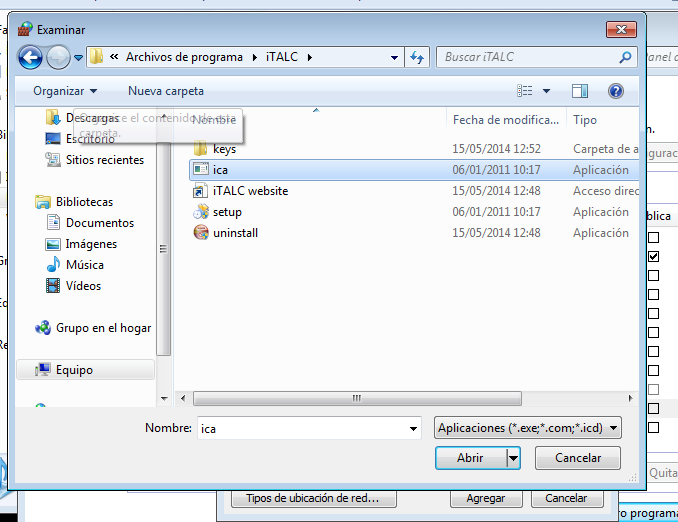Empezamos la instalación del cliente el una MV debian.
Luego creamos el grupo italc y añadimos el usuario al grupo.
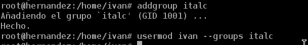Ahora pasamos la "key" del master al cliente.
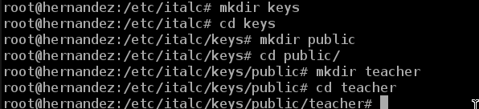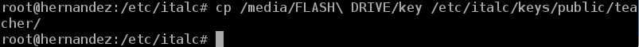Le ponemos permisos al grupo italc para acceder a las keys.
Para finalizar vamos a la MV master y abrimos el italc.
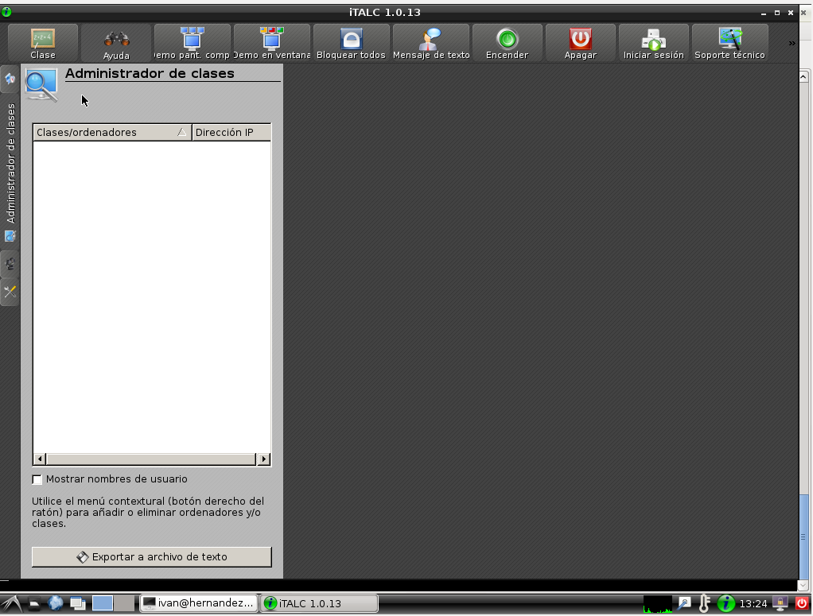Luego añadimos una clase, y ordenadores indicando su dirección IP. Tras ésto vemos que la MV debian cliente se ve perfectamente y la podemos controlar.
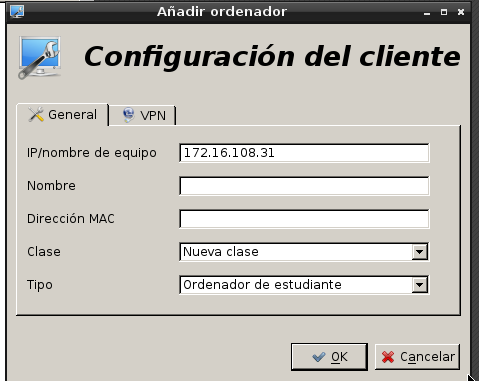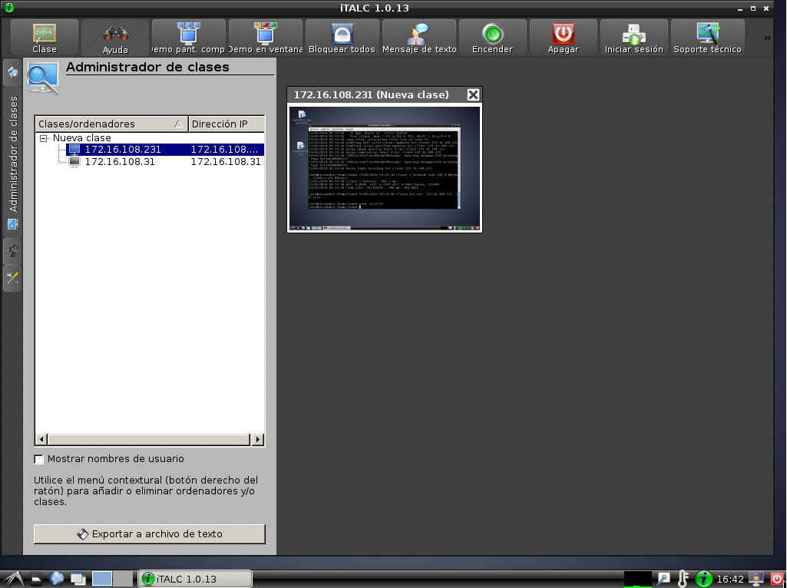Hay un problema con el italc de Windows que se ve la pantalla en negro, buscando información he visto que es un problema de debian siendo
el master.
Pero funciona ya que desde el master puedo apagar la MV Windows.